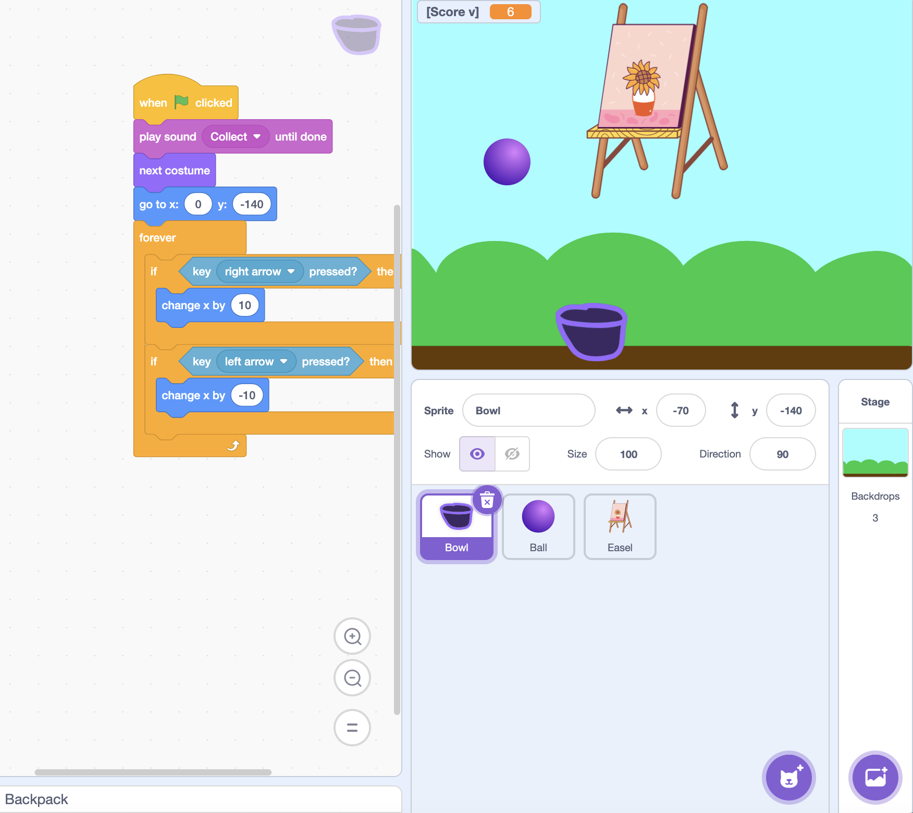

Plan the interaction
I decided that the player would control a bowl while a ball moved downward from the top of the stage.
Scratch · Interactive Game Design
An interactive Scratch game in which players move a bowl with the arrow keys to catch a falling ball.

Overview
I wanted to create a simple game that was easy to understand but still required timing and coordination.
The player moves a bowl from side to side while trying to catch a falling ball before it reaches the ground.
My role
Process
I decided that the player would control a bowl while a ball moved downward from the top of the stage.
I used keyboard events so the bowl moves left or right when the corresponding arrow key is pressed.
I created a condition that checks whether the ball touches the bowl and responds when a catch happens.
After a catch or miss, the ball returns to its starting position so the player can continue.
Challenge
One challenge was making the movement feel responsive while keeping the bowl inside the boundaries of the stage.
I also had to make sure the game correctly detected when the bowl and ball touched.
Reflection
This project helped me understand how events, loops, conditions, coordinates, and sprite interactions work together in Scratch.
In a future version, I would add score tracking, levels, increasing speed, and more visual feedback.
Open the game on Scratch.
Play on Scratch